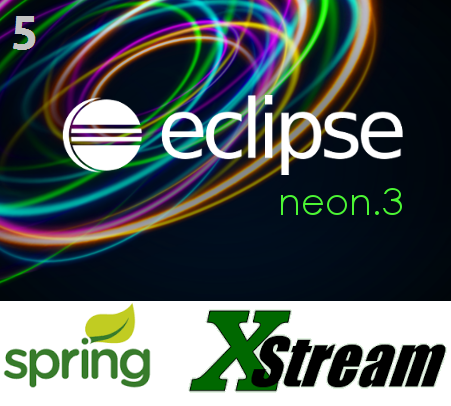
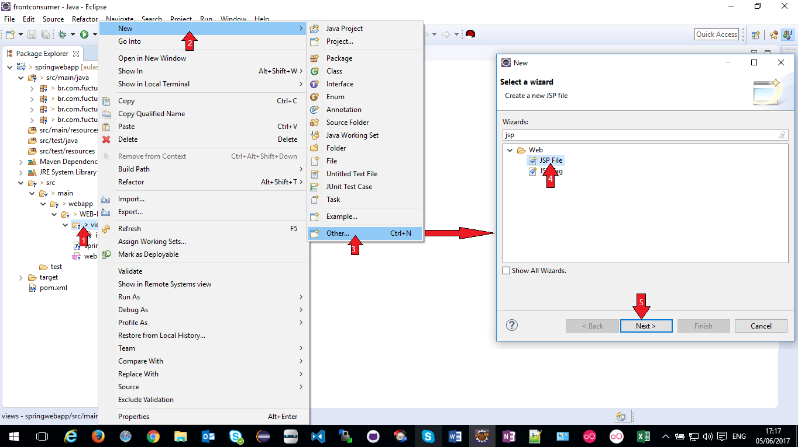
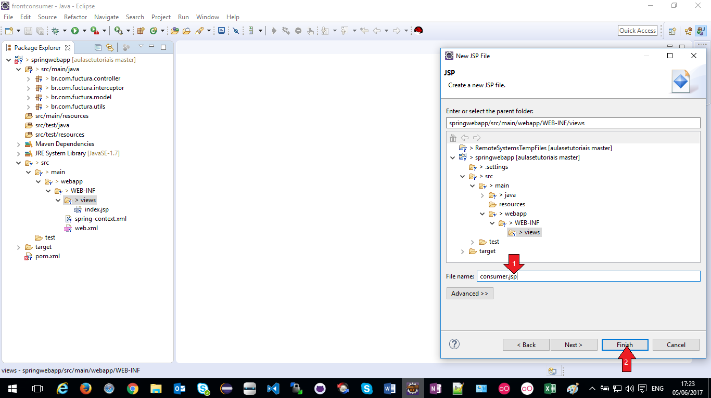
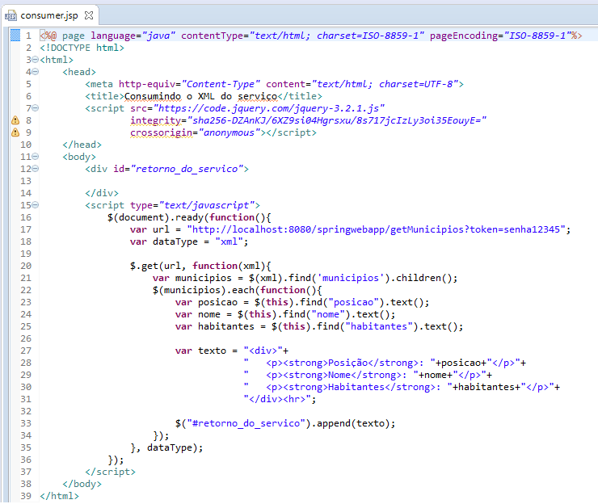
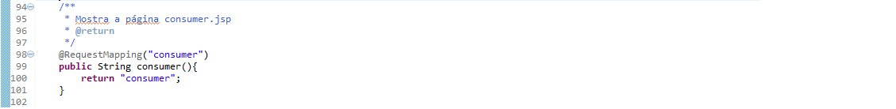
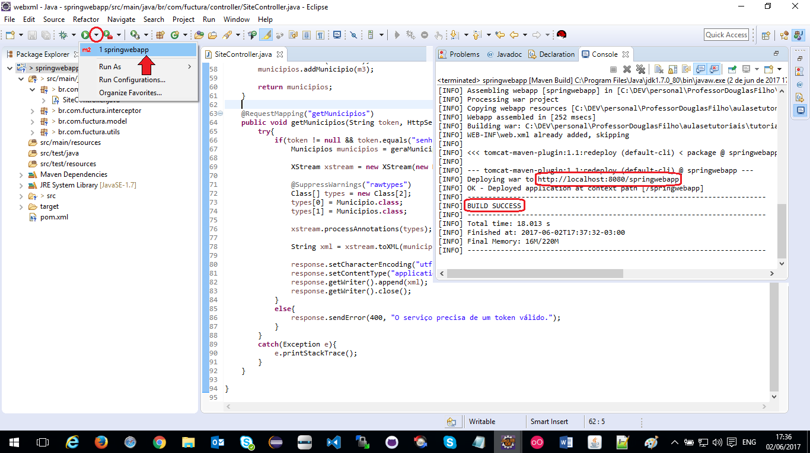
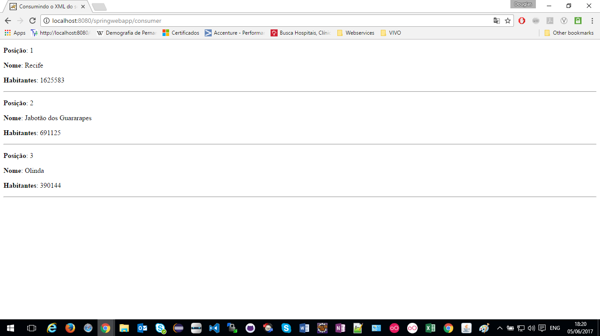

Consumindo o seu XML da Web
Para prosseguir com este tutorial é necessário que já tenha executado com êxito o Tutorial 5 - XML na Web
Supondo que já realizou os passos do tutorial 5 e está com sua aplicação rodando no Tomcat
Crie uma página html que usará requisições Ajax (com JQuery) para consumir o XML
Para isso, é necessário que a página esteja em um servidor devido à política de compartilhamento de recursos (CORS) do protocolo Web
Crie uma nova página na aplicação que será responsável por consumir o XML disponível pela aplicação criada com base no tutorial anterior
Observe a imagem a seguir onde é possível criar a página acessando a pasta "src/main/webapp/WEB-INF/views" e clicando com o botao direito do mouse sobre a pasta "views"
Clique em "New > Other", digite "jsp", selecione a opção "JSP File" e clique em "Next >"
Defina o nome da pagina JSP e clique em "Finish"
Como iremos consumir um serviço, podemos utilizar a API JQuery para fazer uso de ajax.
A imagem a seguir mostra como deve ficar o conteudo da página JSP utilizando JQuery através de uma CDN (precisa de internet para funcionar)
Criada a pagina, ela precisa de uma URL de onde seja chamada, então, criemos o mapeamento da URL na classe SiteController
Desta forma acessaremos a página consumer.jsp a partir da URL http//localhost:8080/springwebapp/consumer
Reconstrua a aplicação com o script de redeploy que já foi criado no tutorial 3.
Para isso, clique sobre a seta (para baixo) como mostra na imagem abaixo e selecione "springwebapp"
Aguarde o termino do preocesso até aparecer a mensagem "BUILD SUCCESS"
Acesse a nova funcionalidade em http//localhost:8080/springwebapp/consumer
Acesse o codigo deste tutorial neste link.
Continue nos acompanhando, acesse nossa home e veja o quanto pode aprender com Java.
Até mais!